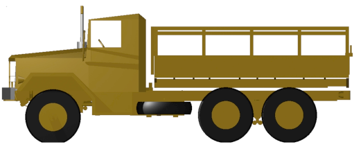
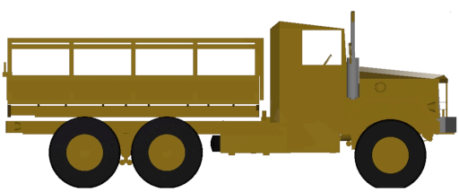
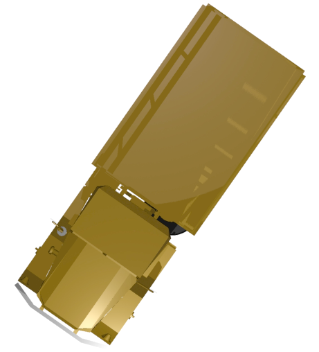
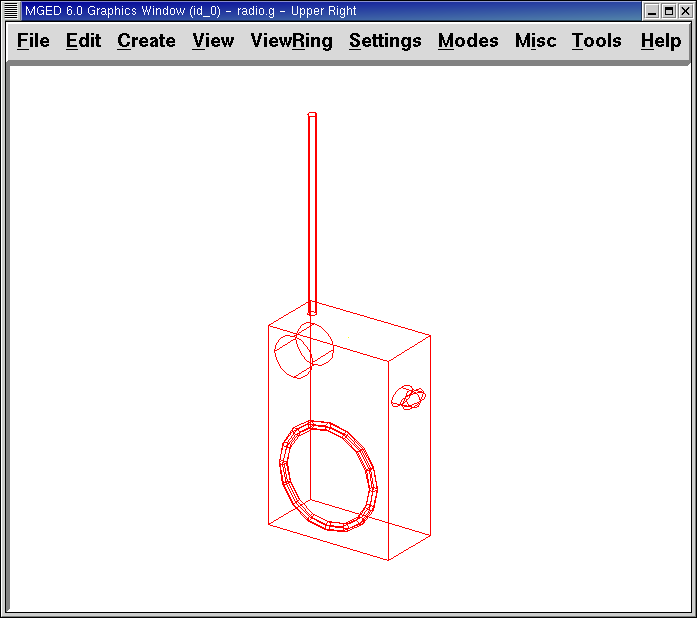
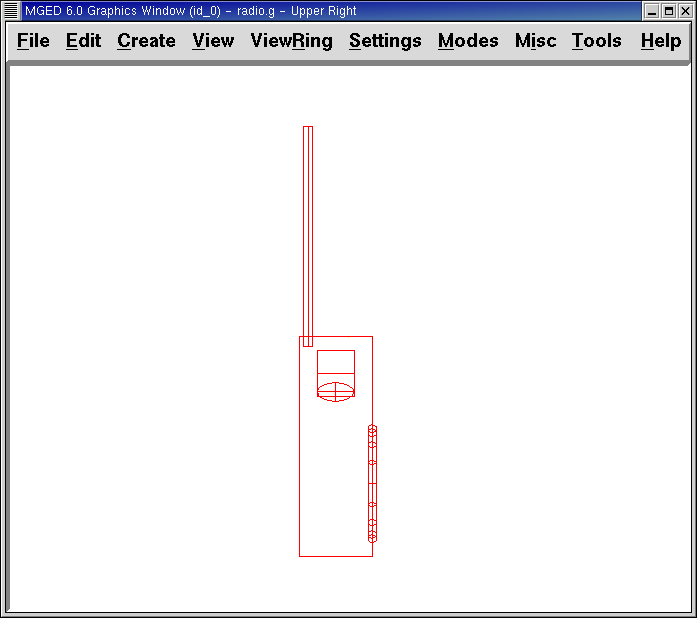

2. Learning Viewing Options in MGED
In this lesson, you will:
-
Create a model radio.
-
Locate viewing information in the Command Window.
-
Identify elements of the
MGEDviewing system. -
View your radio from different angles.
-
Work with Shift Grips.
Models in BRL-CAD are constructed in a single xyz coordinate
system, which we sometimes refer to as model space. The Graphics
Window of MGED displays a portion of this space. The xyz
coordinate system is used for specifying both the geometry and the
view of the geometry that is presented in the Graphics Window.
MGED offers a default view and a variety of optional views.
You can switch back and forth between these views during and after
model creation. This lesson is designed to help you understand the
viewing process and options.
1. Creating a Radio
To gain practice viewing actual geometry, let’s build a simple
geometric object-a "walkie-talkie" radio. Note that the commands we
use to do this are not discussed here because our current concern is
on applying the principles of viewing. Later lessons on creating
geometry address these commands in detail. Begin by launching
MGED and creating a new database named radio.g. Remember that
one way to do this is to type the following command in a Terminal
Window:
$ mged radio.g
Type the following in the Command Window, carefully checking each line before pressing ENTER. If you make a mistake, use BACKSPACE or the left/ right arrow keys to make corrections before pressing ENTER (see Appendix B for the editing command list).
|
Be especially careful to note the difference between the numeral one [1] and the letter l [l] in ell1 on the third line. |
in body.s rpp 0 16 0 32 0 48 ENTER in btn.s rec 8 30 36 0 3 0 4 0 0 0 0 2 ENTER in btn2.s ell1 8 33 36 4 0 0 2 ENTER in spkr.s tor 16 16 16 1 0 0 12 1 ENTER in ant.s rcc 2 2 46 0 0 48 1 ENTER in knob.s rcc 4 4 40 8 0 0 5 ENTER
|
Note that in the preceding Command Line expressions, btn is an abbreviation for button, ant is an abbreviation for antenna, and spkr is an abbreviation for speaker. Also note that the numbers could have been separated by single spaces. The extra spaces were inserted simply to improve readability. For some usages (e.g., the r and comb commands, which are discussed later), the number of spaces has to be exact. |
An image similar to the following should now appear in the Graphics Window.

2. Locating Viewing Information in the Command Window
Now take a minute to look at the Command Window. Even if nothing is
in the window, enclosed in the bottom border is a string of
information about the Graphics Window. An example string might read:
cent=(8.000 16.000 24.000) sz=96.000 mm az=35.00 el=25.00 tw=-0.00
ang=(0.00 0.00 0.00)
As detailed in the following table, this information contains four groups of viewing data about the Graphics Window.
| Screen Designation | Viewing Information | Location of Variables | Default Units | Default Values |
|---|---|---|---|---|
cent= |
Center of View |
First 3 numbers |
Millimeters |
0.000 0.000 0.000 |
sz= |
Size of View |
4th number |
Millimeters |
Dependent upon size selected |
az= |
Viewing Angle |
5th and 6th numbers |
Degrees |
35.00 |
el= |
25.00 |
|||
tw= |
Twist |
7th-10th numbers |
Degrees |
0.00 |
ang= |
Angle of View |
0.00 0.00 0.00 |
3. Identifying Elements of the MGED Viewing System
3.1. Center of View
The first set of information tells you the center of what you are viewing. You can change the center of where you are looking through both the GUI and the Command Window.
To change the center of your view of the radio using the GUI, press the SHIFT key and any mouse button while dragging the mouse. (This is an example of a Shift Grip, which is described later in this chapter.) You can also change the center of view by placing the mouse pointer where you want the center to be and clicking the middle mouse button.
To change the center of view using the Command Window, simply type at the prompt the word center followed by three values for x, y, and z (which is the 3-D coordinate system mentioned previously). For example:
center 0 15 325.735 Enter
As you change your view of the geometry, notice that the numbers in the brackets after the cent= title will change to reflect the new center of the view.
3.2. Size of View
The size of the view is the amount of model space that is shown in the Graphics Window. For example, consider using a camera with a zoom lens to photograph a rose. As shown in the following figures, if you zoom in on the rose, it will appear large in relation to your viewing field. If you zoom out, it will appear smaller. In actuality, the view size for the rose image on the left might represent only 15 mm across while the view size for the image on the right might represent 100 mm across. In both cases, however, the actual size of the rose is the same.

Figure 2. Zoom In to View Details (small size of view)
|

Figure 3. Zoom Out to View Object in Relation to Environment (large size of view)
|
To change the view size of your radio through the GUI, click the right mouse button to zoom in and the left mouse button to zoom out. Each time you click the left or right mouse button, the view of the design will increase or decrease in size by a factor of 2 (i.e., two times larger or two times smaller than the previous size).
You can also zoom in or out on your design by going to the View menu and selecting Zoom In or Zoom Out. A drawback to this method is that you can only zoom in or out one time because the drop-down menu closes once you make a selection.
If you get lost at any point while creating a model, you can use the
zap (Z) command to clear the geometry from the Graphics Window and
then recall the shape with the draw command. When drawing in an empty
Graphics Window, MGED automatically sizes the view to fit what
you draw into the window.
You can control the view size of your radio more accurately with the Command Window. To set the size to 100 (of whichever units you have selected), type at the prompt:
size 100 Enter
You can also zoom in or out on a design by typing zoom on the Command Line. To make your radio appear 50% smaller, you would type:
zoom 0.5 Enter
To make your radio appear twice as large, you would type:
zoom 2 Enter
|
Remember that changing the view size does NOT affect the size of the object. You will change the size of an object in Lesson 6. |
3.3. Angle of View
Azimuth, elevation, and twist (all measured in degrees) determine where you are in relation to the object you are viewing. Azimuth determines where you are around the sides of it (i.e., to the front, left, right, behind, or somewhere in between), elevation determines where you are above or below it, and twist determines the angle you are rotated about the viewing direction.
To better understand azimuth, imagine walking around a truck with a camera to photograph it. As shown in the following illustrations, you would be at 0'0 azimuth if you stood directly in front of the truck to take its picture. If you circled around slightly to your right, you would be at 35'0 azimuth. If you moved further around until you were looking directly at the driver’s side (in U.S. trucks), you would be at 90'0 azimuth. Standing behind it would put you at 180'0 azimuth. If you were facing the passenger’s side, you would be at 270'0 azimuth.
|
The terms azimuth, elevation, and twist are similar to the terms yaw, pitch, and roll, respectively, which are common terms in the aerospace industry. |

Figure 4. Front (az=0, el=0)
|

Figure 5. az=35, el=0
|

Figure 6. Left (az=90, el=0)
|

Figure 7. Rear (az=180, el=0)
|

Figure 8. Right (az=270, el=0)
|
Elevation, on the other hand, involves the viewer’s position above or below an object. In the preceding example, you circled around a truck without changing your relative height. You had an elevation of 0'0, which means you were level with it. As the following figures illustrate, however, imagine stopping at the 35'0 azimuth position and then climbing a ladder to photograph the truck from 25'0 elevation. Climbing higher, you would be at 60'0 elevation. If you were directly above it with the camera facing down, you would be at 90'0 elevation. If you crawled under the truck and looked directly up at it, you would be at -90'0 elevation.
|
Figure 9. az=35, el=0
|

Figure 10. az=35, el=25
|
Figure 11. az=35, el=60
|

Figure 12. az=35, el=90
|

Figure 13. Top (az=270, el=90)
|

Figure 14. Bottom (az=270, el=-90)
|
Finally, twist (which is an optional setting in MGED)
specifies a rotation about the viewing direction. This rotation is
applied to the view after azimuth and elevation have been designated.
So, returning to our truck example, imagine standing in front of the
vehicle (az=0, el=0) and then tilting your camera counterclockwise
14'0. This would give your view a 14'0 twist angle, as shown in the
following figure (on the left). Note again that it is not the truck
that is tipped up, but simply your view of it. For more information
on specifying twist, see the ae command in Appendix A.

Figure 15. Front (az=0, el=0, tw=14)
|
4. Summing up on Azimuth and Elevation and the xyz Coordinate System
As mentioned at the start of this lesson, MGED operates in a
three-dimensional coordinate system (determined by the x, y, and z
axes). Azimuth is measured in the xy plane with the positive x
direction corresponding to an azimuth of 0'0. Positive azimuth angles
are measured from the positive x axis toward and past the positive y
axis. Negative azimuth angles are measured in the other direction.

Figure 16. Azimuth, Elevation, and the xyz Coordinate System
|
If the azimuth angle is 0, then elevation is measured in the xz plane with +90'0 corresponding to the positive z direction and -90'0 corresponding to the negative z direction. However, if azimuth is not 0, these angles are in a plane aligned with the azimuth direction.
5. Viewing Your Radio from Different Angles
Let’s now experiment with different views of your radio. MGED
has several standard default views, which you’ve already seen in the
preceding truck example. They include Top (az270, el90); Bottom
(az270, el-90); Right (az270, el0); Left (az90, el0); Front (az0,
el0); Rear (az180, el0); az35, el25; and az45, el45.
Go to the View menu and try viewing your radio from different angles.

Figure 17. Top
|

Figure 18. az35,el25
|

Figure 19. Right
|

Figure 20. Front
|
You can also select any azimuth-elevation combination from the Command Line. For example, at the prompt type
ae 128 17 Enter
As with many of the Command Line options, this method of selecting views provides a finer degree of control/precision when you need it.
MGED can also display multiple views simultaneously. Go to the
Modes menu and select Multipane. Four small panes with different
views should appear in your Graphics Window, as shown in the following
illustration.

6. Working with Shift Grips
The Shift Grip options of MGED are handy hot-key and mouse
button combinations that can be used in two different ways. With
regard to our present discussion on viewing, the Shift Grips can, in
effect, "drag" the world around in front of the viewer (but without
actually changing the coordinates of the viewed objects). The same
Shift Grips can also be used in Edit mode to actually move or alter
the geometry of your objects. In both cases, the Shift Grips appear
to do the same thing, so it is important always to know the mode in
which you are operating.
In general, the SHIFT key translates (moves), the CTRL key rotates, and the ALT key constrains (or limits) translation or rotation to a particular axis (x, y, or z). These axes correspond to the three mouse buttons as follows: the left button represents the x axis, the middle button represents the y axis, and the right button represents the z axis. In addition, the SHIFT and CTRL keys can be used in conjunction with any mouse button to scale an object (although the ALT key will not constrain this action). The following table lists all of the key bindings and their functions.
| Function | Key Combination | Effect in Normal Viewing | Effect in Edit Mode |
|---|---|---|---|
Translate (Move) |
SHIFT + any mouse button + mouse drag |
Moves view in any direction |
Translates object in any direction |
Rotate |
CTRL + any mouse button + mouse drag |
Rotates view in any direction |
Rotates object in any direction |
Constrain Translation |
SHIFT + ALT + left mouse button + mouse drag |
Moves view in the x direction |
Translates object in the x direction |
SHIFT + ALT + middle mouse button + mouse drag |
Moves view in the y direction |
Translates object in the y direction |
|
SHIFT + ALT + right mouse button + mouse drag |
Moves view in the z direction |
Translates object in the z direction |
|
Constrain Rotation |
CTRL + ALT + left mouse button + mouse drag |
Rotates view about the x axis |
Rotates object about the x axis |
CTRL + ALT + middle mouse button + mouse drag |
Rotates view about the y axis |
Rotates object only about the y axis |
|
CTRL + ALT + right mouse button + mouse drag |
Rotates view about the z axis |
Rotates object about the z axis |
|
Scale |
SHIFT + CTRL + any mouse button + mouse drag |
Scales view larger or smaller |
Scales object larger or smaller |
|
Depending on your window manager or desktop environment settings, some key combinations may already be designated to perform other tasks (e.g., resizing or moving a window). If so, you may need to adjust settings to allow the Shift Grip options to function. Furthermore, left-handed users may have switched the behavior of the left and right mouse buttons in their system configurations. In such instances, the terms left mouse button and right mouse button should be switched throughout this document. |
Probably the easiest way to familiarize yourself with the Shift Grip options is to try them out on your radio. Using the preceding table as a guide, experiment with translating, rotating, constraining translation and rotation to particular axes, and sizing your radio view.
|
Remember, although the Shift Grip options may appear to be manipulating objects, unless you are in Edit mode they are only manipulating your view of the objects. |